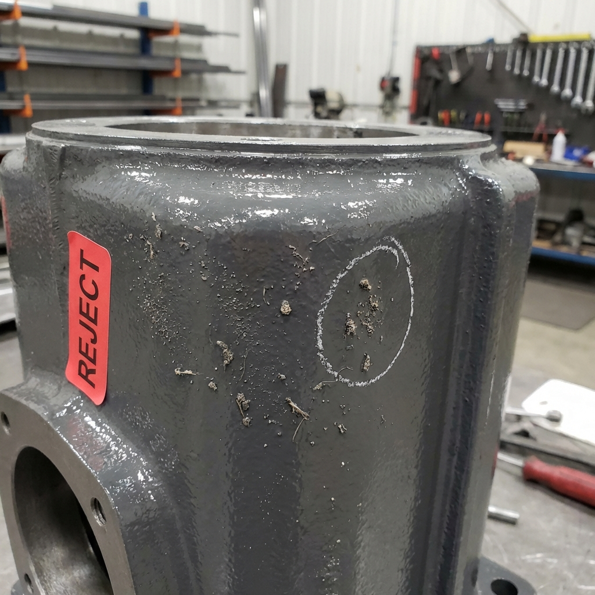
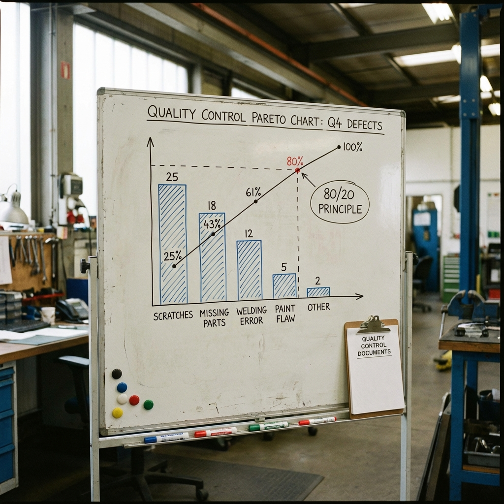
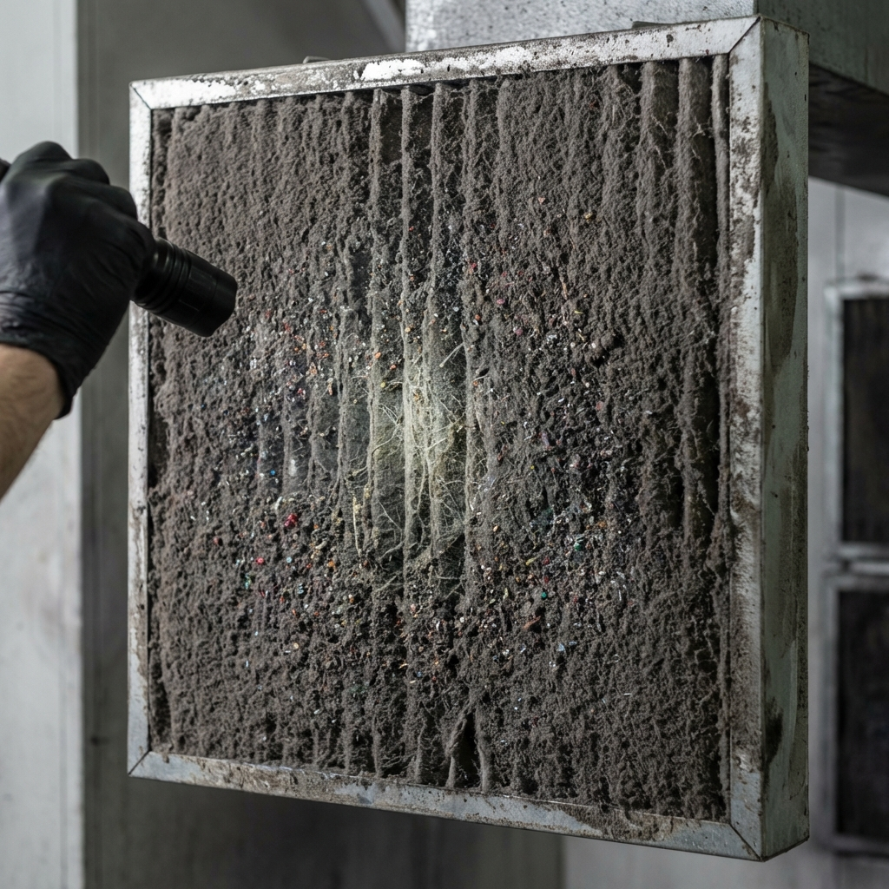

Vilfredo Pareto (1848-1923) a observé que 80% des effets sont le produit de 20% des causes.
Il faut traiter les "Gros Poissons" en premier !

12% de rebuts - Il faut prioriser !

On s'attaque aux poussières (75% des défauts) !

Maintenance préventive oubliée → 75% des problèmes résolus !